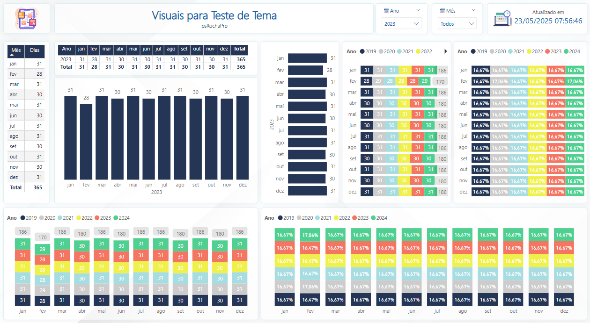

Welcome! Showcasing my data visualization and API integration projects.
This interactive dashboard presents key performance indicators (KPIs) such as GDP, Population, Life Expectancy, and Internet Access for around 200 countries over a 5-year period. Data is sourced from the World Bank and REST Countries APIs via Python, and visualized using Power BI to allow for global and regional comparisons.
 View World KPIs Dashboard
View World KPIs Dashboard
An interactive Power BI dashboard showcasing socio-economic data for all 295 municipalities in the state of Santa Catarina. The report focuses on the 2021 GDP per capita (PIB per capita) and features multiple visualizations, including a ranked bar chart, an interactive map with detailed tooltips (showing city flags, mayor, and specific data), and a regional breakdown of municipalities according to IBGE divisions. This allows for a comprehensive analysis of the state's economic landscape.
View SC Municipalities DashboardThis dashboard comprehensively features all Brazilian states and their respective municipalities (cities), integrating several crucial Key Performance Indicators (KPIs) sourced from Wikipedia, including GDP per capita, the Human Development Index (HDI), the Infant Mortality Rate, and the Literacy Rate; additionally, a Combined Ranking was created to clearly identify the state with the best overall quality of life.
 View Brazil States Dashboard
View Brazil States Dashboard
A comprehensive Power BI dashboard developed as a teaching tool for sales analysis. This didactic panel explores various Power BI functionalities, including data acquisition, data modeling, DAX measures, interactive filtering, map visualizations, tooltips, and diverse chart representations to illustrate sales performance by vendor, product, and time.
View Didactic Sales PanelAn interactive dashboard featuring hospitalization data from the Brazilian Public Health System's (SUS) Hospital Information System (SIH/SUS). The analysis leverages data sourced from `basedosdados.org` and processed using Google BigQuery, focusing on key metrics such as admissions, deaths, age group demographics, sex, and race.
 View SIH/SUS Dashboard
View SIH/SUS Dashboard
An interactive dashboard featuring hospitalization data from the Brazilian Public Health System's (SUS) Hospital Information System (SIH/SUS). The analysis leverages data sourced from `basedosdados.org` and processed using Google BigQuery, focusing on key metrics such as admissions, deaths, age group demographics, sex, and race. (By Municipalities)
 View SIH/SUS Municipalities Dashboard
View SIH/SUS Municipalities Dashboard
A demonstration dashboard designed to exhibit the versatility and aesthetic capabilities of the custom 'psrRochaPro' JSON theme for Power BI. This sample report includes a wide array of Power BI visuals, all consistently styled by the theme, showcasing its application across diverse chart types and data representations.
 View Theme ShowcaseThis dashboard consolidates and visualizes trending data from multiple social media platforms including YouTube, Reddit, Twitch, Spotify, and TMDB. It utilizes Python scripts to fetch data via APIs and Power BI for interactive reporting, providing insights into current online trends.
 View Social Dashboard
View Social Dashboard
An interactive Pokémon directory displaying sprites, types, and base statistics for the first 150 Pokémon. Data is fetched live from the PokéAPI using Python and visualized in Power BI, offering a quick reference for Pokémon enthusiasts.
 View Pokémon Directory
View Pokémon Directory